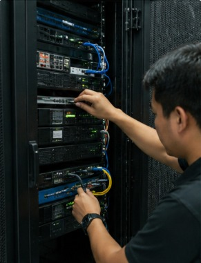
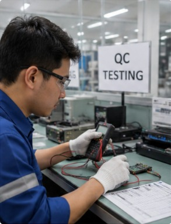

Pandu Prasetyo
Mahasiswa Informatika UNSIA
Email: panduprasetyo18@gmail.com
Email: panduprasetyo18@gmail.com
Saya memiliki pengalaman kerja lebih dari 10 tahun di bidang Technical Support. Selama bekerja di PT L7 System, saya terbiasa menangani troubleshooting aplikasi, instalasi server, konfigurasi jaringan, serta membantu pengguna menyelesaikan kendala teknis yang mereka hadapi.
Saat ini saya sedang melanjutkan pendidikan S1 Informatika di Universitas Siber Asia (UNSIA) untuk memperdalam pemahaman mengenai teknologi informasi dan pemrograman. Saya memiliki minat pada bidang support system, jaringan komputer, dan pengembangan web.
| Tahun | Institusi |
|---|---|
| 2026 - Sekarang | Universitas Siber Asia (UNSIA) - Informatika |
| 2005 - 2009 | SMA Prima Nusantara Jakarta |
| Perusahaan | Posisi | Periode |
|---|---|---|
| PT Standard Chartered Bank | Data Entry / Support | 2010 - 2011 |
| PT Circle K Indonesia Utama | Store Crew | 2011 - 2014 |
| PT Trans Retail Indonesia | Staff Grocery | 2014 - 2015 |
| PT L7 System | Technical Support | 2015 - 2025 |
Saya memiliki pengalaman sebagai Technical Support, mampu melakukan troubleshooting, serta memahami konfigurasi jaringan. Saat ini saya sedang mempelajari pemrograman web.

Melakukan instalasi dan konfigurasi server, termasuk pengaturan jaringan, service, dan keamanan sistem.
Melakukan konfigurasi perangkat dan troubleshooting untuk memastikan sistem berjalan dengan optimal.

Melakukan pengujian dan pengecekan kualitas aplikasi maupun perangkat untuk memastikan hasil sesuai standar yang ditetapkan.